This Legion Leatherworking guide will show you the fastest and cheapest way how to level your Legion Leatherworking skill up from 1 to 100.
This Legion Leatherworking guide will show you the fastest and cheapest way how to level your Legion Leatherworking skill up from 1 to 100.
Leatherworking is the best combined with skinning, and I highly recommend to level these professions together because it will be a lot easier to get the needed materials if you have skinning. So, check out my Skinning Leveling Guide if you want to level skinning. You can also just buy the mleathers at the Auction House, but then you will need a lot of gold.
Learning Legion Leatherworking
First, visit your Leatherworking trainer Namha Moonwater at Dalaran. Just walk up to a guard in the city, you can ask them where the Leatherworking trainer is located.
After you learn Leatherworking, pick up the quest  Skin Deep from Namha Moonwater. (requires level 10)
Skin Deep from Namha Moonwater. (requires level 10)
The quest reward is  [Legion Leatherworker].
[Legion Leatherworker].
Unlocking recipes
Leatherworking recipes are unlocked by doing quests for your profession trainer Namha Moonwater.
You should get to level 45 and finish every Leatherworking quest before you continue this guide.
There are 42 Leatherworking quest in total, they are pretty straight forward, so I will not write down the details of every quests. Some of the quests lead you to dungeons but you can finish every quest easily in a few hours if you start them at 50, otherwise you will have to wait because later quests have level requirement.
The last quest series can only be unlocked at level 45. To get these quest you have to do Suramar storyline up to 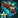 Masquerade quest. You will get the starting Suramar quests
Masquerade quest. You will get the starting Suramar quests  Khadgar's Discovery from Archmage Khadgar as soon as you hit 45 and visit Dalaran. After you finish the Masquerade quest, visit your Leatherworking trainer at Dalaran and pick up the quest
Khadgar's Discovery from Archmage Khadgar as soon as you hit 45 and visit Dalaran. After you finish the Masquerade quest, visit your Leatherworking trainer at Dalaran and pick up the quest  Demon Flesh. After you finish this quest chain, you will get two rewards:
Demon Flesh. After you finish this quest chain, you will get two rewards:
Recipe ranks
Most Legion recipes now have 3 ranks. Higher rank recipes allow you to craft an item for fewer materials, and they stay orange for a lot longer (grants guaranteed skill-ups). Therefore, you should only use rank 3 recipes when you can.
Rank 3 recipes comes from different sources like Vendors, World Quests, Reputation, dungeon drops, and even rated battleground wins.
If you hover over the little stars in your spellbook, you can see the source of the next rank for the selected recipe.
Unlocking World Quests
Most of the of the rank 3 Battlebound and Warhide recipes comes from World Quests. To get these quests, you must first complete  Uniting the Isles by reaching friendly reputation with every Legion faction. You can get this quest from Archmage Khadgar.
Uniting the Isles by reaching friendly reputation with every Legion faction. You can get this quest from Archmage Khadgar.
If your first character has already completed this, you don't need to grind rep on your alts.
After you unlocked the quests, you also have to level your Legion Leatherworking to at least 25 to unlock the profession World quests.
1 - 75
Check out my Stonehide Leather farming, and Stormscale farming guides if you want to farm leathers.
90 x [Rank 3 - Warhide Bindings] - 810 x Stonehide Leather
This recipe will be green for the last 5 points, so this is just an aproximate number. It will depend on your luck how many you have to make. (you can also make it up to 80 if you are feeling lucky, but at that point it might take 10 craft for 1 skill point, so it's better to make the next recipe)
You can also make 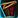
If you finished every Leatherworking quests, you should have rank 2 version of every Battlebound and Warhide armor pieces. Now your aim should be to get one of the rank 3 recipes.
Rank 3 recipes:
- [Warhide Bindings] - Dropped by Shade of Xavius in Darkheart Thicket dungeon.
- [Battlebound Grips] - Treasure from last boss in Halls of Valor dungeon.
Alternative Rank 3 recipe for Stormscale:
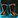
75 - 100
Now you need to get a rank 2, and a rank 3 recipe from one of the Gravenscale or Dreadleather armor pieces.
These two belt recipes below are the best recipes for this part, because it's really easy to get the rank 3 recipes, and they are also the cheapest ones. 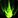
Rank 1 recipes are sold by Stalriss Dawnrunner at Suramar but only if you completed the quests. (scroll back to the unlocking recipes part, if you still didn't finish the quests)
Rank 2 and Rank 3 of these belts are sold by Strap Bucklebolt for 250 and 500 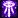
25 x 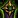 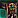
25 x
Alternative recipes if you don't want to use Blood of Sargeras:
- 25 x
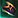
[Rank 3 - Dreadleather Bindings] - 2750 x Stonehide Leather - 25 x
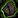
[Rank 3 - Gravenscale Armbands] - 2750 x Stormscale - 25 x
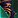
[Rank 3 - Dreadleather Gloves] - 2875 x Stonehide Leather - 25 x
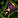
[Rank 3 - Gravenscale Grips] - 2750 x Stormscale
Rank 2 recipe for every armor below is sold by Ranid Glowergold at Dalaran.
Rank 3 recipe locations:
 [Recipe: Gravenscale Armbands] is a world drop at Broken Isle, so you can get this by basically playing a game, doing quests and killing mobs. I'm not sure if it drops from instances.
[Recipe: Gravenscale Armbands] is a world drop at Broken Isle, so you can get this by basically playing a game, doing quests and killing mobs. I'm not sure if it drops from instances.- [Recipe: Dreadleather Bindings] can be found in the Small Treasure Chest at the end of Withered Army Training scenario. Read this wowhead comment on how to unlock this.
- [Recipe: Dreadleather Gloves] is dropped by Advisor Vandros in The Arcway dungeon.
- [Recipe: Gravenscale Grips] is dropped by Advisor Melandrus in the Court of Stars dungeon.
I hope you liked this Legion Leatherworking guide, congratulations on reaching 100!